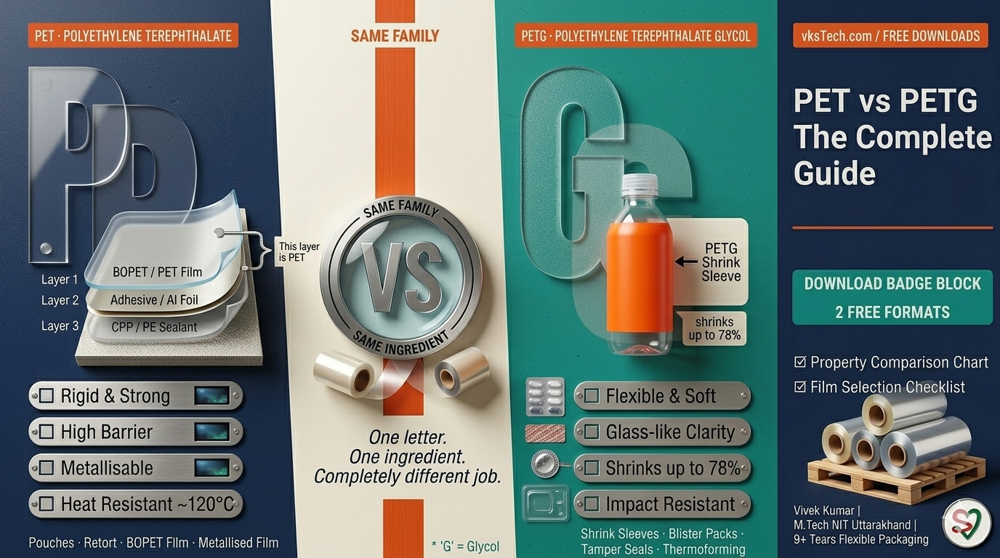
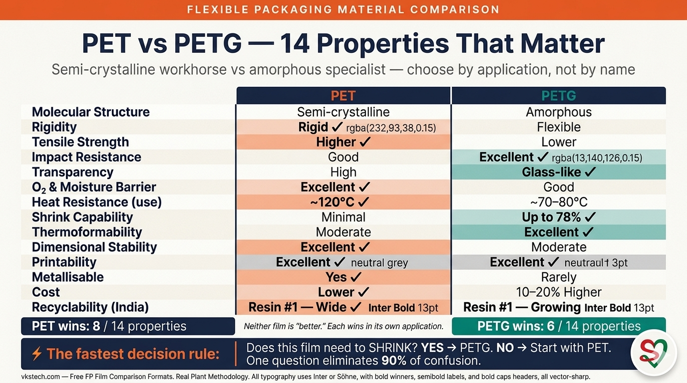
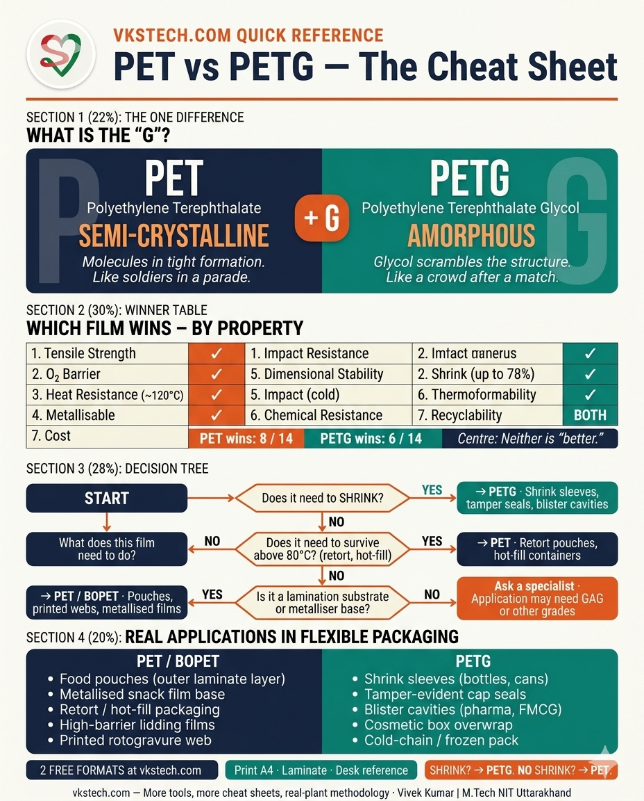
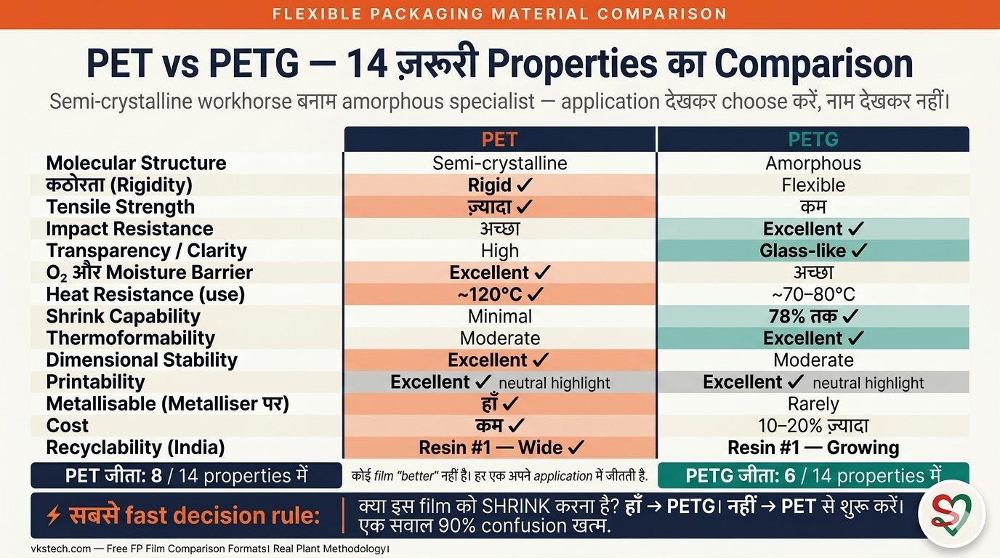

🧪 PET vs PETG — What's the Difference and Which One Does Your Packaging Actually Need?
📖 10-min read | The Two Most Confused Polyester Films in Flexible Packaging — Finally Explained Simply | Includes Free Downloadable Comparison Chart | Published May 2026
Walk into any flexible packaging plant and ask five people the difference between PET and PETG. You will get five different answers — and at least two of them will be wrong. These two materials share almost the same name, look almost identical when you hold a roll up to the light, and yet behave completely differently on your machine, in your laminator, and on your customer's shelf. The confusion costs plants real money — wrong film specified on the BOM, shrink sleeve that won't shrink properly, barrier that fails mid-shelf-life. This blog explains the difference simply, clearly, and in the language of the shop floor. No chemistry lecture. Just what you need to know to specify the right film for the right job.

PET vs PETG — two polyester films, one letter of difference, completely different jobs in your plant.
THE ONE-LINE DIFFERENCE
PET and PETG are both polyester films. PETG is PET with one extra ingredient — Glycol. That single addition makes PETG softer, more flexible, easier to thermoform, and capable of shrinking tightly around any shape. PET stays rigid and strong. Each wins in a different job.
WHERE EACH ONE LIVES IN YOUR PLANT
PET — Your BOPET lamination substrate, your metallised film base, your printed foil-look pouch. Rigid, dimensionally stable, high barrier.
PETG — That shrink sleeve wrapping the shampoo bottle. That heat-shrink tamper seal on the pharma cap. Flexible, high-shrink, glass-like clarity.
WHAT YOU GET BELOW
A complete head-to-head property comparison, where each material appears in real flexible packaging applications, how to choose between them, and a free downloadable comparison chart + material selection checklist.
🔬 The "G" That Changes Everything
PET stands for Polyethylene Terephthalate. It is one of the most used plastics in the world — found in water bottles, polyester fabric, BOPET film, and almost every food pouch you have ever sealed. PETG stands for Polyethylene Terephthalate Glycol. The only difference in the name is that "G" — and that G stands for Glycol, a chemical added during manufacturing that disrupts PET's natural molecular structure.
Here is the simple version: PET molecules naturally arrange themselves into a tight, orderly, crystalline structure — like soldiers standing in formation. This gives PET its strength, stiffness, and excellent barrier properties. When you add Glycol to the recipe, the molecules can no longer line up neatly. The structure becomes disordered and amorphous — like a crowd after a match rather than a parade. This disordered structure is what gives PETG its flexibility, its impact resistance, and most importantly, its ability to stretch and shrink when heat is applied.
One letter. One ingredient. Completely different behaviour on your machine.

PET = molecules in tight crystalline formation (left). PETG = Glycol scrambles the structure into an amorphous crowd (right). Same base material. Completely different behaviour.
💪 PET — The Strong, Reliable Workhorse
PET has been the backbone of flexible packaging for decades. When you laminate a BOPET film to a CPP or aluminium layer to make a pouch, the BOPET layer is PET. When you run a roll through your metalliser and deposit a thin aluminium layer on it, the base film is PET. When a client hands you a sample of a printed food pouch with a stiff, crinkle-resistant feel, that outer substrate is almost certainly biaxially oriented PET — BOPET.
What makes PET so reliable? Its semi-crystalline structure gives it high tensile strength — it resists tearing, stretching, and puncturing under the stresses of lamination, printing, and high-speed form-fill-seal. Its excellent barrier properties against oxygen and moisture mean the food inside a PET-based pouch stays fresh longer. Its dimensional stability — it does not stretch, warp, or distort under normal processing temperatures — means registration stays tight on a 10-colour rotogravure press. Its high heat resistance means it can handle hot-fill applications and retort pouches without deforming.
PET is also cheaper than PETG, widely available in India, and carries Resin Identification Code #1 — the most widely recycled plastic globally. If you need strength, barrier, dimensional stability, or a metallisable substrate, PET is almost always the answer.
🤸 PETG — The Flexible, Shrinkable Specialist
PETG is not PET's competitor. It is PET's cousin who went to gymnastics school. Where PET is rigid and structured, PETG is flexible and adaptable. The Glycol modification that scrambles PET's crystalline structure unlocks a property that PET simply cannot offer — the ability to shrink dramatically when heat is applied.
PETG shrink film can shrink up to 78% of its original size when heat is applied. That is why it wraps so perfectly around the curved, irregular shapes of shampoo bottles, beverage cans, and pharmaceutical containers — forming a seamless 360-degree label that looks printed directly onto the bottle. No wrinkles. No lifting corners. Clean, tight, professional.
Beyond shrink, PETG offers superior optical clarity and gloss compared to PET. PET is transparent, yes — but PETG has a glass-like brilliance that makes colours on a printed shrink sleeve appear vivid and premium. PETG is also more impact-resistant — it bends before it breaks, making it far less likely to crack or shatter during handling, transport, or cold-storage. And because it is amorphous (no crystalline structure to lock in), PETG is significantly easier to thermoform — it flows into moulds at lower temperatures, with less risk of stress cracking or warping.
The tradeoff is real though. PETG has lower heat resistance than PET — it starts to soften at a lower temperature, making it unsuitable for retort pouches or hot-fill containers that see above 70–80°C. Its barrier properties — while decent — are not as strong as PET, especially against oxygen. And it costs more per kg than standard PET. PETG is not a general-purpose film. It is a specialist that earns its price in the right application.
⚖️ Head-to-Head — Every Property That Matters
Molecular Structure
Semi-crystalline
Amorphous
Rigidity / Flexibility
Rigid ✓
Flexible ✓
Tensile Strength
Higher ✓
Lower
Impact Resistance
Good
Excellent ✓
Transparency / Clarity
High
Glass-like ✓
O₂ & Moisture Barrier
Excellent ✓
Good
Heat Resistance (use temp)
Up to ~120°C ✓
Up to ~70–80°C
Shrink Capability
Minimal
Up to 78% ✓
Thermoformability
Moderate
Excellent ✓
Dimensional Stability
Excellent ✓
Moderate
Printability
Excellent ✓
Excellent ✓
Metallisable (on metalliser)
Yes ✓
Rarely
Cost (approx.)
Lower ✓
10–20% Higher
Recyclability (India)
Resin #1 — Wide ✓
Resin #1 — Growing

All 14 properties at a glance. Orange = PET wins. Teal = PETG wins. Download the full editable version in the formats section below.
🏭 Where You Actually See Each One in Flexible Packaging
PET — the film under your laminate. If you run a lamination line and your structure is PET / Adhesive / CPP or PET / Al Foil / PE, the outer web is PET. It provides the printable surface, the stiffness that keeps the pouch standing upright on a shelf, and the first line of barrier defence. PET is also the base film in a metalliser — the roll that enters the vacuum chamber and exits with a thin mirror-like aluminium coating that gives snack and namkeen pouches their shiny silver finish. BOPET (Biaxially Oriented PET) is the specific grade that runs through both processes — stretched in two directions during manufacture to boost strength and barrier to their maximum.
PET — retort and hot-fill containers. When a food product needs to be sterilised inside its final pouch at 121°C, only PET-based structures can handle that. PETG would soften and deform. PET retort pouches — seen in ready-to-eat meals, baby food, and pet food — rely on PET's high-temperature stability.
PETG — the sleeve that wraps the bottle. The full-body label on a soft drink bottle, shampoo bottle, or water bottle is almost always a PETG shrink sleeve. The label is printed flat as a tube, then slipped over the bottle and passed through a heat tunnel. PETG shrinks tightly around every curve — even the narrow neck and wide shoulder — giving a seamless 360-degree decoration that would be impossible with a paper or pressure-sensitive label. This is where PETG's 78% shrink capability earns its premium price.
PETG — tamper-evident seals and caps. That tight band around a medicine bottle cap, or the shrink wrap sealing a cosmetics box, is PETG. It provides tamper evidence (any attempt to open it tears the seal visibly) and a premium appearance that retailers value. Medical and pharmaceutical packaging uses PETG extensively for its chemical resistance, glass-like clarity, and proven food-safety record under FDA and EFSA standards.
PETG — blister packaging and thermoformed trays. When a blister pack for tablets is formed, the cavity that holds each tablet is thermoformed into a film. PETG thermoforms at lower temperatures, with fewer cracks and better shape retention than PET — making it preferred for complex blister cavity geometries.

In a typical flexible packaging plant — PET runs on the metalliser, laminator, and rotogravure press. PETG runs on the shrink sleeve line, heat-tunnel, and blister thermoformer. Both materials, entirely different zones.
🎯 How to Choose Between Them — The Simple Decision Tree
The choice between PET and PETG is not about which film is better. It is about which film is right for what you are making.
Choose PET when: You need a lamination substrate for a printed food pouch. You are running a metalliser and need a base film. Your product is hot-filled, retorted, or needs to survive above 80°C. You need the best possible oxygen and moisture barrier. You need dimensional stability for tight registration on a printing press. Cost is a key factor. You need a widely recycled material.
Choose PETG when: You are making a full-body shrink sleeve for a bottle. You need a tamper-evident heat-shrink band around a cap or carton. You are thermoforming complex shapes like blister cavities or display trays. You need glass-like optical clarity for a premium appearance. Your product will be stored in a freezer or cold chain and you need impact resistance without brittleness.
The single fastest question to ask: does this film need to shrink? If yes — PETG. If no — PET is almost always the right starting point.
⚠️ Three Common Confusions That Cost Plants Money
1. Ordering PETG when you need BOPET (or vice versa). The most expensive confusion. A purchase officer reads a BOM that says "polyester film" and orders PETG because it is in stock. The lamination line runs fine but the pouch goes soft in the hot-fill machine. Or the metalliser operator loads a PETG roll by mistake — the film behaves completely differently under vacuum and the metallisation is uneven. PET and PETG are not interchangeable. The BOM must specify the grade.
2. Assuming PETG has the same barrier as PET. For long shelf-life food products — dry snacks, spices, nuts — the oxygen barrier is the difference between a 12-month shelf life and a 4-month one. PETG's barrier is decent but measurably lower than PET's. Using PETG in a structure designed around PET barrier values will shorten shelf life without anyone on the production floor noticing until the field complaints come in.
3. Trying to metallise PETG on a standard PET metalliser programme. PETG's lower heat resistance means it behaves very differently in a vacuum metalliser's heat zone. Running PETG on parameters designed for BOPET can cause film stretching, surface defects, or uneven aluminium deposition. If your customer specifically asks for a metallised PETG shrink sleeve (yes, this exists — see PETG Metallised Shrink Film), treat it as a completely separate product with its own development cycle.

Save this. Share with your purchase team. These three mistakes appear in plants every month — and all three are preventable with one sentence on the BOM.

The full cheat sheet — print A4, laminate, keep at your desk. Decision tree + 14-property winner table + where each film lives in your plant. Download the Excel versions below.
⬇ Free Downloadable Formats — PET vs PETG Reference Tools
Both files are fully editable Excel files (.xlsx) in English and Hindi. Use them as quick references on the shop floor, for BOM reviews, or for training new purchase and production staff.
1
PET vs PETG Property Comparison Chart (Bilingual)
14 properties compared side-by-side · colour-coded winners · English + Hindi · A4 printable
class="dl-btn"
⬇ Download .xlsx
⭐ DECISION TOOL
2
FP Film Material Selection Checklist (Bilingual)
10-question checklist to choose the right film for any FP application · covers PET, PETG, BOPP, CPP, PE · dropdown scoring · auto-recommendation
class="dl-btn"
⬇ Download .xlsx
💡 How to use these together: Use the Comparison Chart (Format 1) for training your purchase and production team on material properties. Use the Selection Checklist (Format 2) every time a new product specification lands on your desk — answer 10 questions and the sheet recommends the right base film family. Prevents the costly BOM errors described in the common confusions section above.
📚 Related reads on this site: This blog covers PET vs PETG material selection. If you found this useful, explore the full flexible packaging blog series at vkstech.com/#blog — topics include BOPET film, vacuum metallising, lamination structures, barrier calculations, and more. Coming up next: BOPP vs BOPET — when does the cost saving justify the barrier trade-off? The full set of free calculators and downloadable formats is at vkstech.com/#tools.
💬 Question or Pushback?
Working with a PETG shrink sleeve supplier and getting inconsistent shrink performance? Unsure whether a client's specification calls for PET or PETG? Running a metalliser and wondering whether PETG films can be processed? Drop your question in the Q&A section at the bottom of this page — I respond personally to every thoughtful question.
💡 Key Takeaway: PET and PETG are both polyester films — the only difference is Glycol, one added ingredient that changes everything. PET is semi-crystalline, rigid, strong, high-barrier, heat-resistant, metallisable, and cheaper — the workhorse substrate for laminated food pouches, BOPET printing webs, and vacuum metallised films. PETG is amorphous, flexible, impact-resistant, shrinkable (up to 78%), glass-clear, and easier to thermoform — the specialist film for shrink sleeves, tamper-evident bands, and complex blister cavities. They are not interchangeable. The fastest decision rule: does the film need to shrink? If yes — PETG. If no — start with PET. The three most expensive mistakes: ordering the wrong grade because the BOM says "polyester film" without specifying type; assuming PETG barrier equals PET barrier for long shelf-life food products; and trying to metallise PETG on parameters set for BOPET.
📌 What's next. Now that PET and PETG are clear, the next logical question is: what about BOPP? How does biaxially oriented polypropylene compare to BOPET for the same food pouch application — and when does the cost saving justify the barrier trade-off? The next blog will break down BOPP vs BOPET with the same head-to-head format.
🧪 PET vs PETG — क्या फ़र्क है और आपकी Packaging को Actually कौन सा चाहिए?
📖 10-min read | Flexible Packaging के दो सबसे Confusing Polyester Films — Finally Simple में Explained | Free Downloadable Comparison Chart शामिल | May 2026 में Published
किसी भी flexible packaging plant में जाएँ और पाँच लोगों से PET और PETG का फ़र्क पूछें। पाँच अलग-अलग जवाब मिलेंगे — और कम से कम दो गलत होंगे। इन दोनों materials के नाम लगभग same हैं, रोशनी में रोल उठाकर देखें तो लगभग identical दिखते हैं — फिर भी machine पर, laminator में, और customer की shelf पर बिल्कुल अलग behave करते हैं। ये confusion plants को real पैसा खर्च कराती है — BOM पर wrong film specify होती है, shrink sleeve ठीक से shrink नहीं होती, barrier shelf-life के बीच fail हो जाता है। ये blog फ़र्क को simply, clearly, और shop floor की language में explain करता है। कोई chemistry lecture नहीं। सिर्फ़ वो जो right film right job के लिए specify करने के लिए जानना ज़रूरी है।
PET vs PETG — दो polyester films, नाम में एक letter का फ़र्क, आपके plant में बिल्कुल अलग jobs।
एक-लाइन का फ़र्क
PET और PETG दोनों polyester films हैं। PETG, PET में एक extra ingredient — Glycol — add करके बनाया जाता है। वो single addition PETG को softer, more flexible, thermoform करने में आसान, और किसी भी shape पर tightly shrink होने में capable बनाती है। PET rigid और strong रहता है। दोनों अलग-अलग job में जीतते हैं।
आपके Plant में कहाँ-कहाँ दिखते हैं
PET — आपका BOPET lamination substrate, metallised film base, printed foil-look pouch। Rigid, dimensionally stable, high barrier।
PETG — Shampoo bottle को wrap करती shrink sleeve। Pharma cap पर heat-shrink tamper seal। Flexible, high-shrink, glass-like clarity।
नीचे क्या मिलेगा
Complete head-to-head property comparison, real flexible packaging applications में हर material कहाँ use होता है, दोनों में कैसे choose करें, और एक free downloadable comparison chart + material selection checklist।
🔬 वो "G" जो सब कुछ बदल देता है
PET का full form है Polyethylene Terephthalate। ये दुनिया के सबसे ज़्यादा use होने वाले plastics में से एक है — water bottles, polyester fabric, BOPET film, और लगभग हर food pouch में मिलता है जो आपने कभी seal किया हो। PETG का full form है Polyethylene Terephthalate Glycol। नाम में सिर्फ़ एक "G" का फ़र्क है — और वो G stands for Glycol, एक chemical जो manufacturing के दौरान add किया जाता है और PET की natural molecular structure को disrupt करता है।
Simple version ये है: PET molecules naturally अपने आप को tight, orderly, crystalline structure में arrange करते हैं — जैसे soldiers parade में खड़े हों। ये PET को उसकी strength, stiffness, और excellent barrier properties देता है। जब Glycol recipe में add होता है, molecules नeatly line up नहीं कर पाते। Structure disordered और amorphous हो जाता है — जैसे match के बाद की भीड़, parade नहीं। ये disordered structure ही PETG को flexibility, impact resistance, और सबसे ज़रूरी — heat apply होने पर stretch और shrink करने की ability देता है।
एक letter। एक ingredient। Machine पर बिल्कुल अलग behaviour।

PET = molecules tight crystalline formation में (बाएँ)। PETG = Glycol structure को amorphous crowd में scramble करता है (दाएँ)। Same base material। बिल्कुल अलग behaviour।
💪 PET — मज़बूत, Reliable Workhorse
PET decades से flexible packaging की backbone रहा है। जब आप एक BOPET film को CPP या aluminium layer के साथ laminate करते हैं pouch बनाने के लिए, वो BOPET layer PET है। जब आप metalliser में एक roll run करते हैं और उस पर thin aluminium layer deposit होती है, वो base film PET है। जब कोई client आपको एक stiff, crinkle-resistant feel वाला printed food pouch sample देता है, वो outer substrate almost certainly biaxially oriented PET — BOPET है।
PET को इतना reliable क्या बनाता है? इसकी semi-crystalline structure इसे high tensile strength देती है — lamination, printing, और high-speed form-fill-seal के stresses में tearing, stretching, और puncturing resist करती है। Oxygen और moisture के against इसकी excellent barrier properties का मतलब है PET-based pouch में food longer fresh रहता है। इसकी dimensional stability — normal processing temperatures पर stretch, warp, या distort नहीं होती — मतलब 10-colour rotogravure press पर registration tight रहती है। इसकी high heat resistance का मतलब ये hot-fill applications और retort pouches को बिना deform हुए handle कर सकता है।
PET PETG से सस्ता भी है, India में widely available है, और Resin Identification Code #1 carry करता है — globally सबसे widely recycled plastic। Strength, barrier, dimensional stability, या metallisable substrate — PET लगभग हमेशा answer है।
🤸 PETG — Flexible, Shrinkable Specialist
PETG, PET का competitor नहीं है। ये PET का वो cousin है जो gymnastics school गया। जहाँ PET rigid और structured है, PETG flexible और adaptable है। Glycol modification जो PET की crystalline structure को scramble करता है, एक ऐसी property unlock करता है जो PET simply offer नहीं कर सकता — heat apply होने पर dramatically shrink करने की ability।
PETG shrink film heat apply होने पर अपने original size का 78% तक shrink कर सकता है। इसीलिए ये shampoo bottles, beverage cans, और pharmaceutical containers की curved, irregular shapes के around इतनी perfectly wrap करती है — एक seamless 360-degree label बनाती है जो ऐसी लगती है जैसे bottle पर directly printed हो। कोई wrinkles नहीं। कोई lifting corners नहीं। Clean, tight, professional।
Shrink के अलावा, PETG PET की तुलना में superior optical clarity और gloss offer करता है। PET transparent है, हाँ — लेकिन PETG में glass-like brilliance है जो printed shrink sleeve पर colours को vivid और premium दिखाती है। PETG more impact-resistant भी है — टूटने से पहले bend करता है, handling, transport, या cold-storage के दौरान crack या shatter होने की chances बहुत कम। और क्योंकि ये amorphous है, PETG thermoform करने में काफ़ी आसान है — lower temperatures पर moulds में flow करता है, stress cracking या warping का risk कम।
Trade-off real है। PETG की PET से lower heat resistance है — lower temperature पर soften होना शुरू होता है, retort pouches या hot-fill containers जो 70–80°C से ऊपर देखते हैं उनके लिए unsuitable। इसकी barrier properties — decent होते हुए भी — PET जितनी strong नहीं, especially oxygen के against। और PET से per kg costlier है। PETG general-purpose film नहीं है। ये एक specialist है जो right application में अपनी premium price earn करता है।
⚖️ Head-to-Head — हर Property जो Matter करती है
Molecular Structure
Semi-crystalline
Amorphous
कठोरता / लचीलापन
Rigid ✓
Flexible ✓
Tensile Strength
ज़्यादा ✓
कम
Impact Resistance
अच्छा
Excellent ✓
Transparency / Clarity
High
Glass-like ✓
O₂ और Moisture Barrier
Excellent ✓
अच्छा
Heat Resistance (use temp)
~120°C तक ✓
~70–80°C तक
Shrink Capability
Minimal
78% तक ✓
Thermoformability
Moderate
Excellent ✓
Metallisable (Metalliser पर)
हाँ ✓
Rarely
Cost (approx.)
कम ✓
10–20% ज़्यादा
Recyclability (India)
Resin #1 — Wide ✓
Resin #1 — Growing

एक नज़र में सभी 14 properties। Orange = PET जीता। Teal = PETG जीता। नीचे formats section में full editable version download करें।
🏭 Flexible Packaging में Actually कहाँ दिखते हैं
PET — आपके laminate के नीचे की film। अगर आप lamination line run करते हैं और structure PET / Adhesive / CPP या PET / Al Foil / PE है, तो outer web PET है। ये printable surface provide करता है, वो stiffness जो pouch को shelf पर standing upright रखती है, और barrier defence की first line। PET metalliser में base film भी है — वो roll जो vacuum chamber में enter करता है और mirror-like aluminium coating के साथ exit होता है जो snack और namkeen pouches को shiny silver finish देती है।
PET — Retort और Hot-fill Containers। जब food product को 121°C पर उसके final pouch में sterilise करना होता है, सिर्फ़ PET-based structures ही handle कर सकती हैं। PETG soften और deform हो जाएगा। PET retort pouches — ready-to-eat meals, baby food, और pet food में देखे जाते हैं।
PETG — Bottle को wrap करती sleeve। Soft drink bottle, shampoo bottle, या water bottle पर full-body label almost always PETG shrink sleeve होती है। Label flat tube के रूप में printed होती है, bottle पर slip होती है, और heat tunnel से गुज़रती है। PETG हर curve के around tightly shrink होता है — narrow neck और wide shoulder भी — seamless 360-degree decoration देता है।
PETG — Tamper-evident Seals और Caps। Medicine bottle cap के around tight band, या cosmetics box को seal करती shrink wrap — ये PETG है। Tamper evidence देती है और premium appearance जो retailers value करते हैं।
PETG — Blister Packaging और Thermoformed Trays। Tablets के लिए blister pack जब form होता है, हर tablet hold करने वाली cavity PETG में thermoform होती है। PETG lower temperatures पर thermoform होता है, fewer cracks और better shape retention के साथ — complex blister cavity geometries के लिए preferred।
Typical flexible packaging plant में — PET metalliser, laminator, और rotogravure press पर run होता है। PETG shrink sleeve line, heat-tunnel, और blister thermoformer पर। दोनों materials, बिल्कुल अलग zones।
🎯 कैसे Choose करें — Simple Decision Tree
PET और PETG के बीच choice ये नहीं है कि कौन सी film better है। ये है कि आप जो बना रहे हैं उसके लिए कौन सी right है।
PET choose करें जब: आपको printed food pouch के लिए lamination substrate चाहिए। आप metalliser run कर रहे हैं। Product hot-fill, retorted, या 80°C से ऊपर survive करना ज़रूरी है। Best possible oxygen और moisture barrier चाहिए। Printing press पर tight registration के लिए dimensional stability चाहिए। Cost key factor है।
PETG choose करें जब: Bottle के लिए full-body shrink sleeve बना रहे हैं। Cap या carton के around tamper-evident heat-shrink band चाहिए। Complex shapes thermoform कर रहे हैं। Glass-like optical clarity चाहिए। Product freezer में store होगा और cold chain में brittleness के बिना impact resistance ज़रूरी है।
एक सबसे fast question: क्या इस film को shrink करना है? अगर हाँ — PETG। अगर नहीं — PET लगभग हमेशा सही starting point है।
⚠️ तीन Common Confusions जो Plants को पैसा खर्च कराती हैं
1. PETG order करना जब BOPET चाहिए था (या उलटा)। सबसे महँगी confusion। Purchase officer BOM पर "polyester film" पढ़ता है और PETG order कर देता है क्योंकि stock में था। Lamination line ठीक से run करती है लेकिन pouch hot-fill machine में soft हो जाती है। या metalliser operator गलती से PETG roll load कर देता है — film vacuum में completely different behave करती है और metallisation uneven होती है। PET और PETG interchangeable नहीं हैं। BOM में grade specify होनी चाहिए।
2. Assume करना कि PETG का barrier PET के equal है। Long shelf-life food products — dry snacks, spices, nuts — के लिए oxygen barrier 12-month shelf life और 4-month shelf life के बीच का difference है। PETG का barrier decent है लेकिन PET के values से measurably lower है। PET barrier values के around designed structure में PETG use करने से shelf life shorter होगी — और production floor पर कोई notice नहीं करेगा जब तक field complaints न आएँ।
3. PETG को standard PET metalliser programme पर metallise करने की कोशिश। PETG की lower heat resistance का मतलब है ये vacuum metalliser के heat zone में बहुत differently behave करती है। BOPET के लिए set parameters पर PETG run करने से film stretching, surface defects, या uneven aluminium deposition हो सकती है। Metallised PETG shrink sleeve के लिए इसे completely separate product treat करें।
Save करें। Purchase team के साथ share करें। ये तीन mistakes हर महीने plants में होती हैं — और तीनों BOM पर एक sentence से preventable हैं।
Complete cheat sheet — A4 print करें, laminate करें, desk पर रखें। Decision tree + 14-property winner table + plant applications। Excel versions नीचे download करें।
⬇ Free Downloadable Formats — PET vs PETG Reference Tools
दोनों files fully editable Excel files (.xlsx) हैं English और Hindi में। Shop floor पर quick reference के लिए, BOM reviews के लिए, या new purchase और production staff को train करने के लिए use करें।
1
PET vs PETG Property Comparison Chart (Bilingual)
14 properties side-by-side compare · colour-coded winners · English + Hindi · A4 printable
class="dl-btn"
⬇ Download .xlsx
⭐ DECISION TOOL
2
FP Film Material Selection Checklist (Bilingual)
10-question checklist किसी भी FP application के लिए right film choose करने के लिए · PET, PETG, BOPP, CPP, PE cover · dropdown scoring · auto-recommendation
class="dl-btn"
⬇ Download .xlsx
💡 ये कैसे एक साथ fit होते हैं: Comparison Chart (Format 1) से अपनी purchase और production team को material properties पर train करें। Selection Checklist (Format 2) हर बार use करें जब desk पर new product specification आए — 10 questions answer करें और sheet right base film family recommend करती है। ऊपर describe BOM errors को prevent करती है।
📚 इस site पर Related Reads: ये blog PET vs PETG material selection cover करता है। अगर ये useful लगा, तो पूरी flexible packaging blog series explore करें vkstech.com/#blog पर — BOPET film, vacuum metallising, lamination structures, barrier calculations, और बहुत कुछ। अगला blog: BOPP vs BOPET — cost saving कब barrier trade-off को justify करती है? Free calculators और downloadable formats का full set vkstech.com/#tools पर।
💬 Question या Pushback?
PETG shrink sleeve supplier के साथ काम कर रहे हैं और inconsistent shrink performance मिल रही है? Unsure हैं कि client specification PET माँग रही है या PETG? Metalliser run कर रहे हैं और wonder कर रहे हैं PETG films process हो सकती हैं क्या? अपना question इस page के bottom पर Q&A section में डालें — मैं हर thoughtful question का personally जवाब देता हूँ।
💡 Key Takeaway: PET और PETG दोनों polyester films हैं — फ़र्क सिर्फ़ Glycol, एक added ingredient का है जो सब कुछ बदल देता है। PET semi-crystalline, rigid, strong, high-barrier, heat-resistant, metallisable, और सस्ता है — laminated food pouches, BOPET printing webs, और vacuum metallised films का workhorse substrate। PETG amorphous, flexible, impact-resistant, shrinkable (78% तक), glass-clear, और thermoform करने में आसान है — shrink sleeves, tamper-evident bands, और complex blister cavities का specialist film। ये interchangeable नहीं हैं। Fastest decision rule: क्या film को shrink करना है? अगर हाँ — PETG। अगर नहीं — PET से शुरू करें। तीन सबसे महँगी mistakes: BOM में "polyester film" लिखने पर wrong grade order करना; long shelf-life food के लिए PETG barrier को PET के equal assume करना; BOPET parameters पर PETG metallise करने की कोशिश।
📌 आगे क्या। अब PET और PETG clear हैं, logical next question है: BOPP के बारे में क्या? Biaxially oriented polypropylene same food pouch application के लिए BOPET से कैसे compare करता है — और cost saving कब barrier trade-off को justify करती है? अगला blog BOPP vs BOPET को same head-to-head format में break down करेगा।